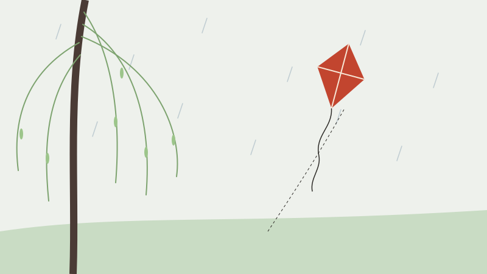

清明

清明是二十四节气中的第五个节气。《岁时百问》中说：“万物生长此时，皆清洁而明净，故谓之清明。”这时气温回升，草木葱茏，天地间一派清新明朗的景象。
清明的特别之处在于，它既是一个节气，又是一个传统节日。人们在这一天祭扫先人、缅怀亲人，也会走出家门，到郊外踏青游春，感受春天的生机。
清明时节雨纷纷，
路上行人欲断魂。
借问酒家何处有？
牧童遥指杏花村。
—— 唐 · 杜牧《清明》
路上行人欲断魂。
借问酒家何处有？
牧童遥指杏花村。
—— 唐 · 杜牧《清明》
清明习俗
- 扫墓祭祖：为先人清扫墓地、献上鲜花，表达思念与敬意。
- 踏青游春：春光正好，人们结伴到郊外散步、赏花。
- 插柳戴柳：柳条易活，象征生命力，民间有“清明不戴柳，红颜成皓首”的说法。
- 放风筝：清明前后风力适中，正是放风筝的好时候。
- 吃青团：江南一带用艾草汁和糯米做成碧绿的青团，清香软糯。
清明的物候
清明的三候是“桐始华、田鼠化为鴽、虹始见”：泡桐花开始绽放；喜阴的田鼠躲回洞中，喜爱阳光的鹌鹑类小鸟出来活动；雨后的天空开始出现彩虹。
清明前后，种瓜点豆。—— 农谚
这句农谚告诉我们，清明前后气温适宜、雨水充足，是种植瓜类和豆类的好时机。古人正是依靠节气来安排农事的。